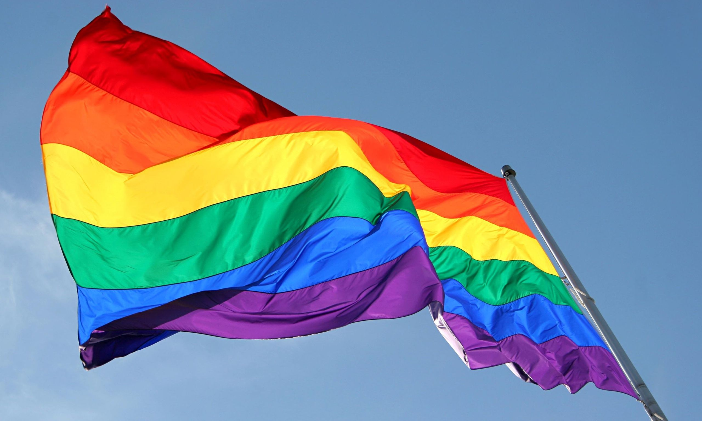
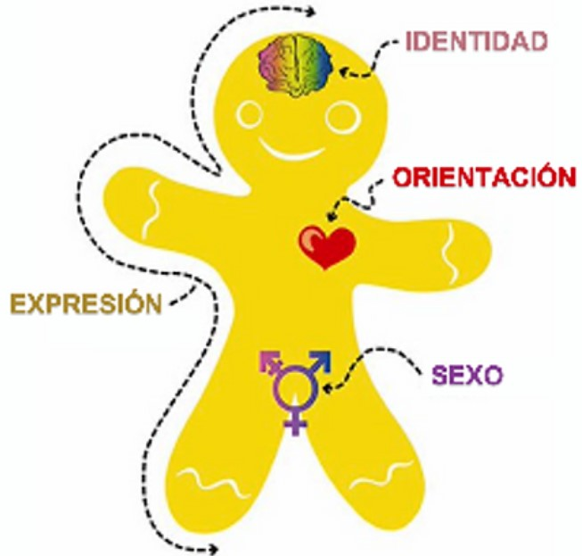

DIVERSIDAD SEXUAL
¿Qué es la diversidad sexual?
Es englobar en un concepto las opciones y formas que tienen las personas de manifestar, vivir y comprender los diferentes aspectos que forman su sexualidad. Son propias de cada persona, y esto nos dicta que comprender esta diversidad requiere que aceptemos que tenemos sexualidad expresándola de forma diferente.
Para hacer más fácil esto debemos considerar que tenemos distintas características físicas, formas de ser, de pensar y de actuar. La diversidad es lo natural.
DA CLICK PARA VISUALIZAR EL SIGUIENTE VIDEO. :)
Para comprender la diversidad sexual debemos aprender sobre las dimensiones de la sexualidad. Las dimensiones de la sexualidad humana se describen a continuación.
- Características biológicas, marcan la diferencia entre hombres y mujeres (para la OMS estas categorías no son excluyentes, ya que hay estados intersexuales). Hay que señalar que hay un sexo designado al nacer en función de la percepción de los genitales del recién nacido (esta situación no impide a la persona en su adultez adoptar una diferente forma anatómica).
- Nace de una construcción social y cultural; este se expresa mediante roles que adoptamos al relacionarnos y sobre todo expresarnos. Actualmente en un marco de diversidad sexo genérica el género no se restringe a una categorización binaria en la cual el género es únicamente determinado por el sexo asignando al nacer (teniendo en cuenta que de ser así se establecen jerarquías de poder debido a los roles de genero estereotipados de femenino propio de las mujeres y masculino propio de los hombres). Es así como desde una visión de diversidad asume que el genero puede cambiar con el desarrollo de las personas quienes pueden identificarse y expresarse con otras entidades.
- Capacidad humana que nos hace capaces de experimentar respuestas subjetivas que evocan deseo, excitación y orgasmo. Pero no solo se queda ahí, incluye también las vivencias psicológicas y simbólicas asociadas al placer. En la diversidad el deseo no tiene reglas, además de que no puede cambiar por voluntad propia. Todos los deseos y sensaciones son válidas.
- Es una necesidad de la especia humana, refiriéndose a la capacidad de desarrollar y experimentar lazos sentimentales. No hay forma única de vincularse, cada persona elige la forma en que se relacionara afectivamente con las personas de su entorno.
- Se asocia con la capacidad de procrear y procesos de crianza. Pero implica aspectos psicológicos de crecimiento personal no relacionado a la maternidad ni paternidad. Como ejemplo las familias diversas, que personas adultas de diversa sexualidad se hacen responsables de una crianza, cuidado y educación de hijos y/o hijas.
- Atracción erótica y emocional así como capacidad de mantener relaciones afectivas y/o sexuales con las personas. Esta orientación sexual es diversa, desde la diversidad se señala que todos los deseos y emociones tiene derecho a existir sin importar a quien van dirigidos. Deseo y afectividad adoptan múltiples expresiones.
- Vivencia de cada persona, de su genero que puede o no corresponder con su sexo asignado al nacer o incluso con los roles de genero estereotipados. Como ya sabemos la diversidad hace que estas identidades adopten múltiples maneras de expresarse.
- Se desarrolla a lo largo de los años, lo cual permite a la persona integrar su sexo, genero, identidad de género y orientación sexual y afectiva. Indudablemente, cada persona vive de manera particular con su cuerpo, su genero e identidad; tiene derecho a expresarla y también de ser reconocida y nombrada de acuerdo con su identidad sexo genérica.

Cada persona es libre de vivir y expresar cada una de las dimensiones sexuales de acuerdo con factores biopsicosociales, culturales e históricos. No siempre se expresará la sexualidad de la misma manera, todos somos distintos y buscamos la salud sexual (un enfoque positivo y respetuosos de la sexualidad y de las relaciones sexuales). Todas las personas debemos respetar, proteger y satisfacer nuestros derechos sexuales.
